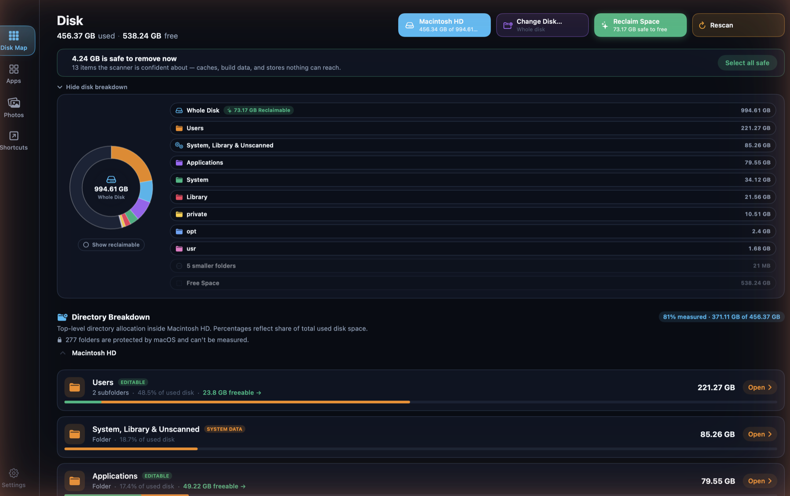
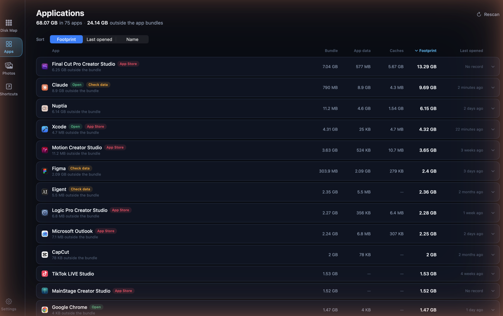
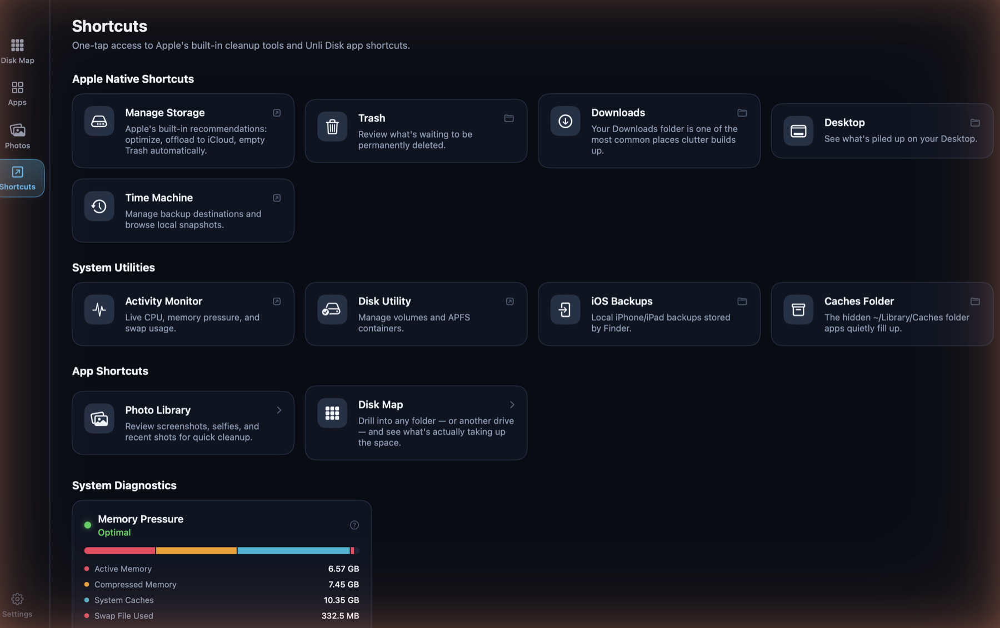

Unli Disk
A disk-space analyzer, developer junk reclaim engine, and photo library cleaner for the Mac. Draws a real map of your volume, finds what's genuinely safe to remove, and never inflates numbers to sell a scan. Native Swift and SwiftUI for Apple Silicon and Intel.

Disk Map + Reclaim, one screen
The donut is built from the real top-level folders on the volume, not generic categories — Users, System, Library, Applications, each its own wedge, with a "Show reclaimable" toggle that carves out what's safe to free without a second chart. Reclaim isn't a separate tab: the same scan surfaces a "safe to remove now" total and a one-click "Select all safe", and every folder row states what fraction of it is protected by macOS and can't be measured — honesty about the unknown, not a rounded-up number.

Applications: the whole footprint
An app is rarely just its bundle. Each row adds bundle, app data and caches into one footprint, and states how much of that lives outside the bundle entirely — the part that goes unnoticed. Sort by footprint to find the weight, or by last opened to find what's stopped earning its space.

Shortcuts: the tools that already exist
One tap to Apple's own cleanup surfaces — Manage Storage, Trash, Downloads, Desktop, Time Machine, Disk Utility, iOS Backups — sitting next to shortcuts into Unli Disk's own screens and a live Memory Pressure gauge (active, compressed, system caches, swap) read straight from the kernel, no shelling out required.
The photo library is shared, not duplicated
Unli Disk's Photos tab runs on the exact same engine as ClearSpace — biggest-first sorting, hearting, filters, timeline — packaged as Packages/UnliDiskPhotos and shared across both platforms rather than built twice.
Platform
Native macOS app in Swift and SwiftUI, sharing its photo engine with the iOS app via Swift Package Manager.
Sandbox migration
Moving to App Sandbox plus a user-granted disk permission (a security-scoped bookmark), replacing Full Disk Access — required for Mac App Store distribution.
Local privacy
100% on-device. No file paths, photo metadata, or scan results ever leave the Mac.
Reversible by default
Removal is always a move to the system Trash behind a confirmation — never a silent unlink.
Planned pricing
One-time purchase, no subscription — same non-negotiable as every calmdownoscar app.